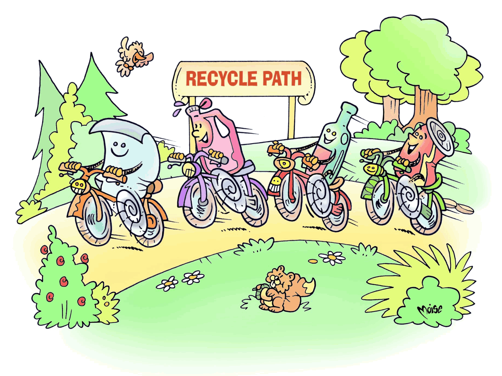
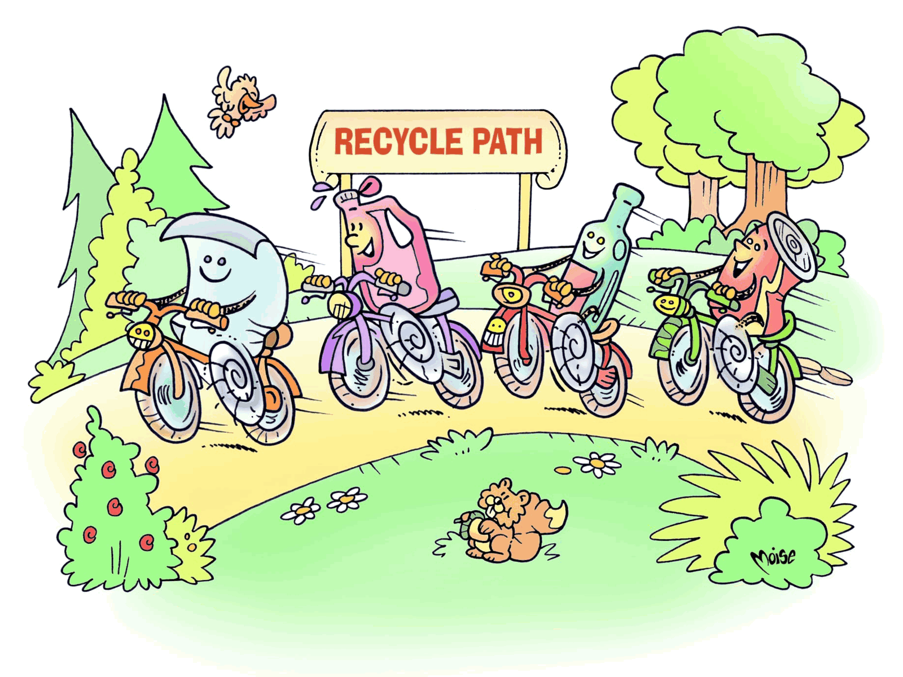

Let’s Sort it Out
 

Solution
The light bulbs shouldn’t be in the bin for glass, the football shouldn’t be in the bin for plastics, and the dirty, greasy cardboard pizza box shouldn’t be in the bin for paper, into which only clean paper can be put.